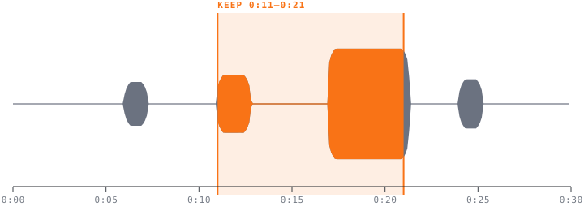
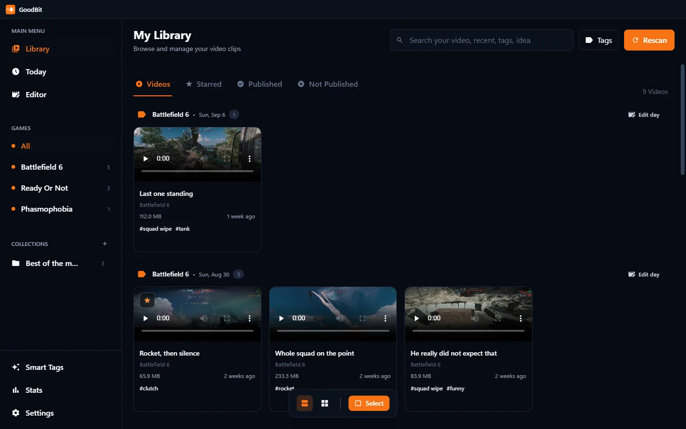
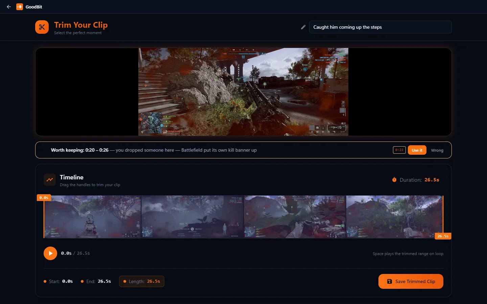
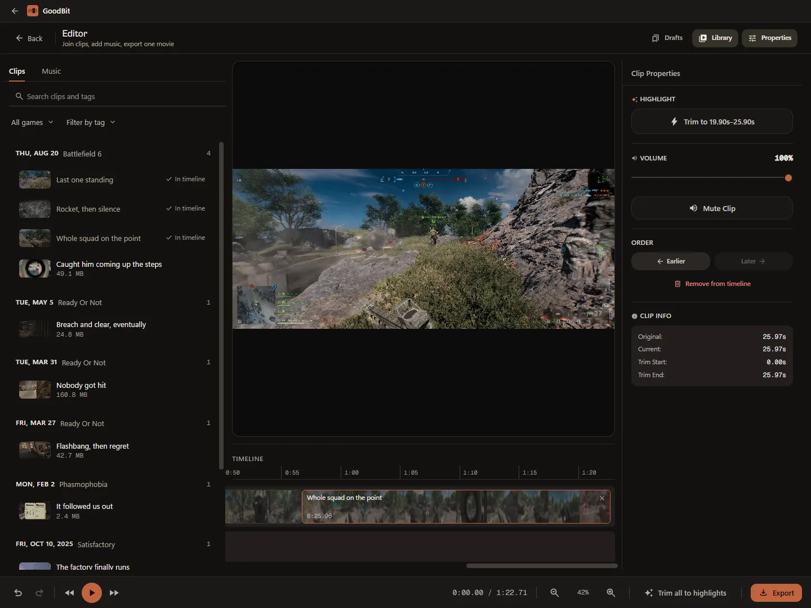
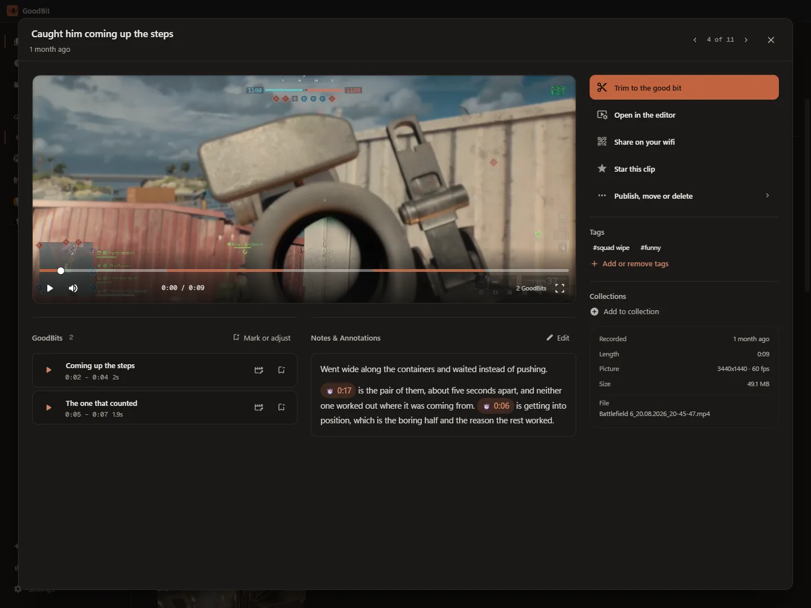

● Windows · free · nothing leaves the PC
You pressed the hotkey for a reason.
Thirty seconds of game lands on your disk every time you reach for the replay key. About ten of them are the reason you reached. GoodBit indexes every clip the moment OBS finishes writing it, and listens for which few seconds those were.
No account, no cloud, no subscription. The analysis runs on your machine and the clips stay on it.

The idea
Whatever was worth keeping made a noise.
The shot landing, the explosion, four people shouting at once. GoodBit measures a clip's loudness against that clip's own quiet, so a horror game and a shooter are each judged on their own terms, then keeps the stretch that stands out most. And where the game will simply tell you what happened, it reads that instead.
- It starts early
- The sound is the reaction. Whatever caused it happened a second or two before, so the suggested window opens ahead of the spike rather than on it.
- It expects the end
- A replay buffer is saved after the thing happened. Across 68 real recordings the loudest moment lands in the last tenth of the clip 24% of the time, where an even spread would put it at 10%. The search leans that way.
- It shuts up
- A moment has to stand clear of the rest of its own clip, not merely be loud: a menu screen whose music swells is louder against its own average than a helicopter crash is. About one clip in six gets a suggestion. The rest are left alone.
- It costs nothing
-
One
ffmpegpass, about a tenth of a second per clip, cached next to the file and recomputed if the file changes. Nothing downloaded, nothing uploaded, no queue. - It reads the HUD
- Battlefield 6 puts a banner under the crosshair when you get a kill, not the feed in the corner, which lists everyone's. GoodBit looks for that banner, so the suggestion arrives with its reason attached: two kills, five seconds apart. Only games it has been taught, only when you open the clip.
- It learns from you
- Every trim records where you cut next to what was suggested. With enough of those, GoodBit fits a small readable model to your own decisions and uses it instead of the built-in threshold, refitting as you go. On your machine, from your clips, nothing to run.
What it does
A library that knows what a game clip is.
Everything, grouped by the evening it happened
GoodBit starts with Windows and sits in the tray, so a clip is already indexed by the time you alt-tab out: thumbnail, frame strip, duration, and the game it belongs to, taken from the folder OBS wrote it into.
Tags can be typed or matched from the filename by rules of your own. Collections group clips across games without moving anything on disk.

The cut is already sitting on the good bit
Open a clip and the suggested window is there above the frame strip, with the reason next to it. Take it, or drag the handles yourself. The preview loops what you have chosen and Space plays it.
Saving keeps the original and writes a new file by copying the recorded streams. No re-encode, so no generational loss, and it takes a second rather than a minute.

A whole evening becomes a montage
Every day of every game has an Edit day button that drops the lot onto the timeline in the order you played them. Then Trim to highlights puts each clip on its own loud moment in one go, and leaves the ones with nothing to point at exactly as they are.
After that it is an ordinary timeline: drag, trim, reorder, a music lane that may run past the picture, undo that steps over whole gestures, and drafts that survive closing the app.

Onto a phone, or onto the internet, or neither
Send to my phone serves one clip to whoever is on the same wifi, behind a 32-character random address, from a server that closes itself after half an hour. Point a camera at the code. Nothing is uploaded: the phone is talking to your PC.
Publishing is the other route, and it is optional. Point GoodBit at a small service you run yourself and clips get public links with Discord-friendly embeds. Leave it unconfigured and the feature is absent rather than broken. There is a step-by-step guide to setting one up, and a quick start if you already run things behind a proxy.

Specification
The rest of it, briefly.
- Export
- Hardware encoding where the machine has it (NVENC, Quick Sync, AMF) and the CPU where it does not. Crops to widescreen, vertical or square without ever scaling up.
- HDR
- Tone mapped to SDR wherever a frame is decoded: exports, exact trims, thumbnails and frame strips. Reading PQ as sRGB is what turns an HDR recording grey everywhere else.
- Loudness
- Optional normalisation to −14 LUFS, so one clip does not arrive twice as loud as the last.
- Your files
- Never renamed, never moved, never re-encoded to trim. Deletes go to the Recycle Bin. A display name is a database field, so OBS keeps writing where it always did.
- Your metadata
-
Names, tags, notes, stars and collections live in one SQLite file under
%APPDATA%\GoodBit. Before a new version touches it, SQLite is asked for a snapshot and the snapshot is opened and checked. Five are kept. - Network
-
Nothing listens on a port. Data moves over IPC inside the process, media over a
private
goodbit://protocol. The one exception is a share you start yourself, which serves exactly one file and stops on its own. - Statistics
- What you actually play, how much of the disk it is using, and how much of it you have tagged.
- Updates
- The installed build checks GitHub Releases in the background and offers the update. The portable build does not.
Download
Windows 10 or 11, 64-bit.
Free. Two builds, same app.
Installer
Start-menu entry, desktop shortcut, and it keeps itself up to date. Installs for the current user, so Windows does not ask for an administrator.
Portable
One executable, run it from anywhere. Same library and settings in
%APPDATA%\GoodBit. Does not update itself.
Windows will interrupt you once. These builds are not signed with a paid certificate, so SmartScreen shows “Windows protected your PC” the first time you run the installer. Choose More info, then Run anyway. That warning is what Windows shows for every unsigned installer.
Asked first
Reasonable suspicions.
Does it move, rename or convert my recordings?
No. Files stay where OBS put them, under the names OBS gave them. Renaming a clip or a game inside GoodBit changes what is shown and nothing on disk. Trimming writes a new file by copying the existing streams, so nothing is re-compressed and the original is still there.
How does it decide what the good bit is?
It measures loudness across the clip and compares every moment to that clip's own middle. If the loudest stretch is not meaningfully louder than the rest, it says there is nothing to point at rather than guessing. For a game it has been taught (Battlefield 6 so far) it also looks at a few frames a second for the notice that game puts on screen when you get a kill, and builds the window around that instead. Nothing is sent anywhere: it is ffmpeg on your PC, and the result is cached, so a clip is only ever read once.
Do I need a server, an account or an internet connection?
No, no, and only for updates. The library, the analysis, the editor and the exports all run locally. Public links are the one optional exception and they need a small module you choose to run on a server of your own.
Does it work with something other than OBS?
Anything that writes video files into one folder per game will do, including ShadowPlay, Medal's export folder, or a script of your own. The only rule is that the top-level folder name is taken as the game name.
What happens to my tags if I uninstall it?
They stay. Uninstalling leaves %APPDATA%\GoodBit alone, so reinstalling
picks the library back up. Deleting that folder loses tags and names, never clips.